多核处理与异构计算系统中的基本概念¶
I. Overview¶
单核系统大概是：
进入多核后，可能变为：
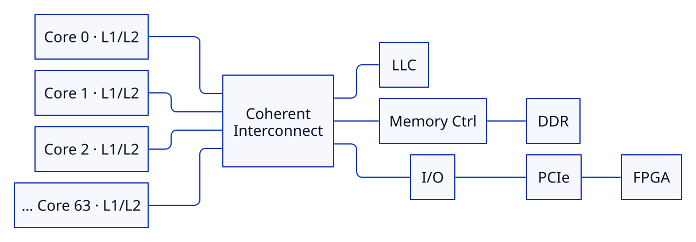 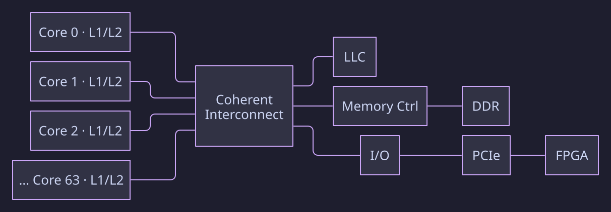
如果考虑多个 CPU Socket，可能变为：
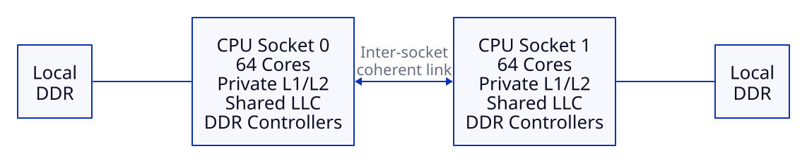 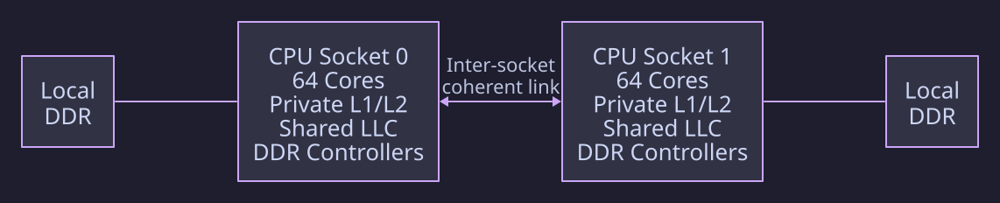
这里有一些较为基础的名词（非复杂概念级）：
1.1 Base Concepts¶
(1) LLC (Last-Level Cache, 末级缓存)¶
LLC 是多核系统中所有核心共享的最后一级片上缓存，位于核心私有的 L1/L2 缓存与主存（DRAM）之间。它通常就是大家常说的 L3 缓存，但在异构 SoC 中也可能表现为系统级缓存 SLC（System Level Cache），连接 CPU、GPU、NPU、ISP 等多个主设备。
例如现代多核 CPU 中，一个很常见的设计是：
- Core 0: 私有 L1/L2 缓存
- Core 1: 私有 L1/L2 缓存
- Core 2: 私有 L1/L2 缓存
- ...
- 所有 Core: 共享 LLC（L3 缓存）
当然，不同 CPU 的具体组织不同，所以不要把“L2 一定私有、L3 一定共享”当成架构定律。
这里真正重要的是两个概念：
- Private Cache
- Shared Cache
这会直接引出以后非常重要的 Cache Coherence。
(2) Core, CPU, Processor, Socket¶
CPU 这个词在不同语境下通常被混用，因此要注意区分：
- Processor / CPU Package: 通常是一整颗处理器芯片
- Core: 独立执行指令的一个计算核心，通常包含 ALU、寄存器、L1/L2 缓存等
-
Socket: 主板上的 CPU 插槽，例如：
Motherboard ┌────────────┐ ┌────────────┐ │ Socket 0 │ │ Socket 1 │ │ │ │ │ │ CPU #0 │ │ CPU #1 │ │ 32 cores │ │ 32 cores │ └────────────┘ └────────────┘这就是“双路服务器”或者 "2-socket system"
-
CPU: 现代 CPU 更像一个小型 SoC:
┌────────────────────────────────────────┐ │ CPU │ │ │ │ Core 0 Core 1 Core 2 Core 3 │ │ │ │ │ │ │ │ Private Private Private ... │ │ Cache Cache Cache │ │ │ │ LLC │ │ │ │ Interconnect │ │ │ │ Memory Controller │ │ │ │ PCIe Root Complex │ │ │ └────────────────────────────────────────┘即现代 CPU 内部通常会包含：
- 计算核心（CPU Cores）
- 缓存（Caches）
- 片上互连（on-chip interconnect）
- 内存控制器（Memory Controller）
- PCIe 接口/控制器（PCIe Interface/Controller）
- 中断逻辑（Interrupt Logic）
因此可以把现代 CPU 理解成：一个以 CPU cores 为核心的复杂 SoC。
(3) On-chip Interconnect (片上互连)¶
Core 之间通过 on-chip interconnect 进行通信：
Core0 ─┐
Core1 ─┤
Core2 ─┼── Interconnect ── LLC
Core3 ─┤ │
│ ├── Memory Controller
│ │
└──────────────────┴── PCIe
过去芯片可能用：总线（Bus），后来规模变大后会使用：Ring, Mesh, NoC 等网络拓扑，例如：
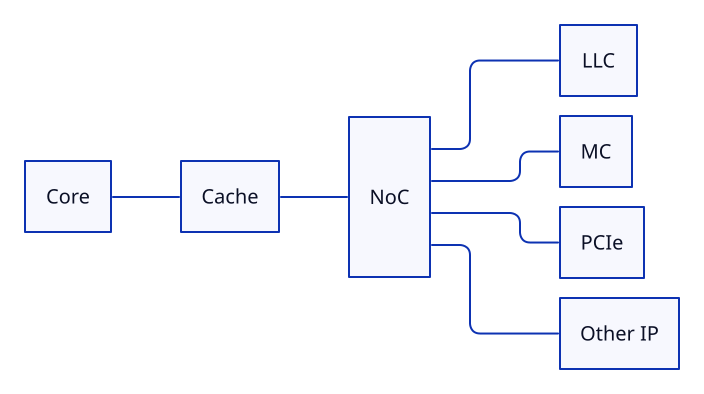 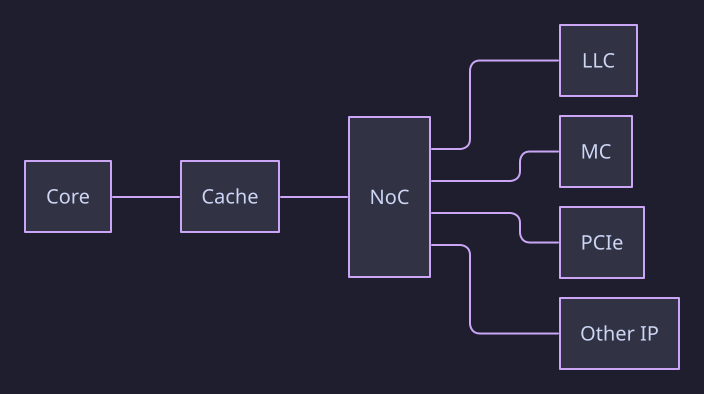
其思想仍然是：很多 requester 和 target 之间进行 transaction，只是复杂程度远高于普通 SoC 总线。
(4) Memory Controller (内存控制器)¶
CPU 与 DRAM 的通信路径一般包含：
Memory Controller 的任务是：把 CPU 的 memory request 转换成 DRAM 能理解的访问操作。
例如 Core 发起：Load 0x12345678，经过 Cache miss 之后，Memory Controller 需要进一步决定：
- 哪个 memory channel？
- 哪个 DIMM？
- 哪个 rank？
- 哪个 bank？
- 哪一 row？
- 哪一 column？
然后产生 DDR 命令。
(5) DDR, DIMM, DRAM 相关¶
- DRAM: Dynamic Random Access Memory，一种存储技术，动态随机存取存储器，是一种易失性存储器，需要周期性刷新。DRAM chip 是一颗颗真正保存 bit 的芯片。
-
DDR: Double Data Rate，双倍数据速率，是 CPU/Memory Controller 与 DRAM 之间使用的接口协议和电气标准，例如：
- DIMM: Dual In-line Memory Module，双列直插内存模块，是把 DRAM chips 封装在 PCB 上的内存条，例如：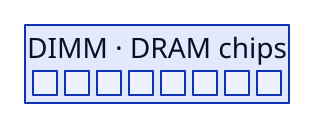
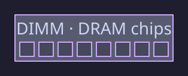
关于 Memory Channel:
Memory Controller 通常有多个：Memory Channel，单通道最多可以插 1 根 DIMM，或者部分支持 2 根 DIMM。
例如：
CPU
│
Memory Controller
├── Channel 0 ── DIMM
├── Channel 1 ── DIMM
├── Channel 2 ── DIMM
└── Channel 3 ── DIMM
增加 channel 最重要的作用之一是：提高总内存带宽（BW）。
假设非常粗略地理解：
- 一个 channel：64 bit × 频率
- 那么：4 channel 理论带宽大致可以达到：4 × 单 channel 带宽
所以服务器 CPU 经常拥有很多 memory channels。这和 GPU 追求高显存带宽也是同一类问题：计算单元很多以后，必须喂得上数据。
Current Picture¶
把前面的概念合起来，目前的系统就可以变为：
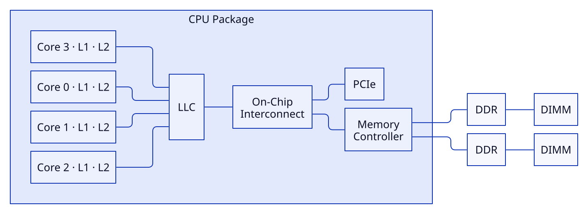 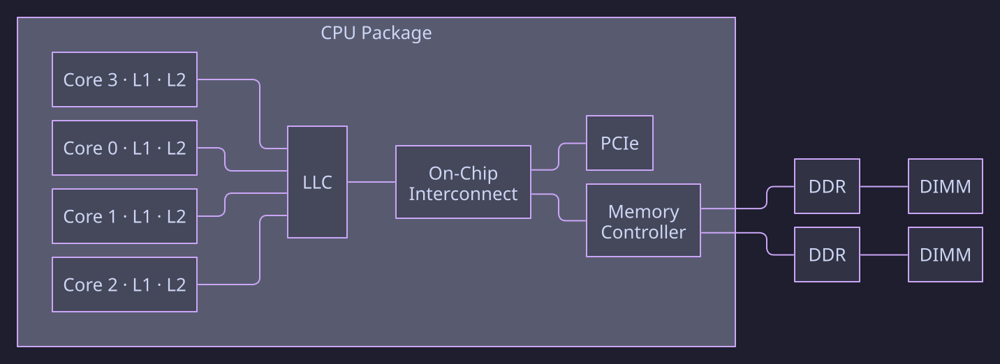
其中，Memory Controller 可以连接多个 DDR channel；PCIe 用于连接多个外设（Device），例如：
- GPU
- SSD (Solid State Drive，固态硬盘)
- NIC (Network Interface Card，网卡)
于是现在可以把整台计算机粗略分成三大世界：
- Compute
- Memory
- I/O
这三个世界之间的交互，就是之后我们要系统学习的主要内容。
例如：
Memory 已经变成共享资源
现在假设有：
- Core 0
- Core 1
- Core 2
- Core 3
四个 Core，它们最终访问的是同一个 DRAM。也就是两个 Core 实际上可以访问同一个物理内存地址。这就是：Shared Memory System。
——这就会带来：Cache Coherence 方面的问题。
Software 运行与 OS 调度
硬件上可以有：Core 0, Core 1, Core 2, Core 3
而软件层通常运行：
OS 可以把它们调度到：
- Thread 0 → Core 0
- Thread 1 → Core 1
- Thread 2 → Core 2
- Thread 3 → Core 3
因此以后我们还需要区分几个层次：Program -> Progress -> Thread -> OS Scheduler -> CPU Core
Thread 是：软件并行的执行流。Core 是：硬件执行资源。两者不是一回事。例如：8-Core 完全可以运行 1000 threads，只是需要 OS 不断进行 scheduling。
此外，还有 Hardware Thread（硬件线程）的概念，例如 SMT （Simultaneous Multithreading，同时多线程），或者Intel 的 Hyper-Threading 技术，允许一个 Core 同时运行两个 Hardware Thread。
例如 8 Physical Cores × 2 Hardware Threads/Core = 16 Logical CPUs，操作系统看到的可能就是：CPU 0, CPU 1, CPU 2, ..., CPU 15，但实际上只有 8 个物理核心。
单 Socket 系统与多 Socket 系统
现代服务器通常是多 Socket 系统，例如：
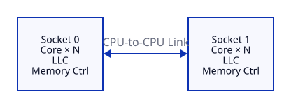 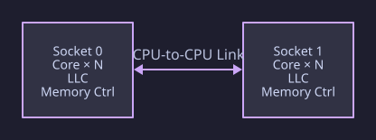
而关键来了：
- Socket 0 通过 Memory Controller 0 访问本地 DRAM 0
- Socket 1 通过 Memory Controller 1 访问本地 DRAM 1
也就是说：不同 CPU Socket 往往有各自直接连接的内存。
于是：Socket 0 -> DRAM 0 通常比较快，但是 Socket 0 -> DRAM 1 就需要经过:
于是访问延迟不同。这就产生了一个极其重要的概念：NUMA （Non-Uniform Memory Access，非一致内存访问），之后会单独深入讲。
这些主题之间通常有很清晰的因果链。
例如
（1）存储方向：
会引出：Memory Bandwidth, Memory Latency, Memory Channel, Bank, Row Buffer, NUMA
（2）缓存方向：
于是存在数据副本，会引出：Cache Coherence, Memory Consistency, MESI Protocol 等概念。
（3）通信方向：
会引出：MMIO, DMA, Interrupt, PCIe Transaction, IOMMU 等概念。
（4）计算方向：
会引出：Multithreading, Synchronization, Lock, Atomic, Memory Ordering, Parallel Programming 等概念。
（5）异构计算方向：
之后会引出：Host / Device, Device Memorym, DMA, Unified Memorym, PCIe Bottleneck, CXL 等概念。
1.2 DRAM: Cornerstone of Memory Subsystem¶
本节的目标是理解清楚如下三个问题：
- 一个物理地址最终是怎样落到某个 DRAM 单元上的？
- 为什么 DRAM 的 bandwidth 和 latency 是两回事？
- 为什么多 Socket 会自然产生 NUMA？
从一次 Cache miss 开始，假设某个 Core 执行 x = A[i]; 时，假设虚拟地址已经通过 TLB/Page Table 拿到了物理地址 PA=0x1234_5678，但是之后：L1 miss → L2 miss → LLC miss，这时才真正需要访问主存。
flowchart LR
Core["Core"]
Cache["Cache Hierarchy"]
MC["Memory Controller"]
Core -->|"Load PA=0x12345678"| Cache
Cache -->|"LLC miss"| MC
Memory Controller 收到的核心信息可以抽象成：Read Physical Address PA=0x1234_5678，但是 DRAM 无法直接理解：0x12345678，DRAM 实际是层次化组织的，Memory Controller 必须把物理地址“解码”为类似:
等字段含义，这里会涉及到 DRAM 的层次化结构组织，参见：DRAM 层次化结构组织。